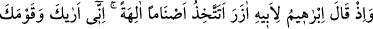
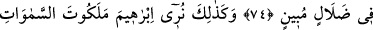
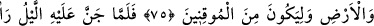
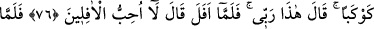
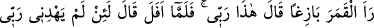
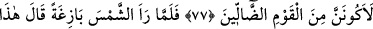
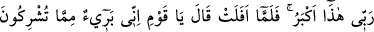
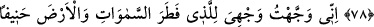
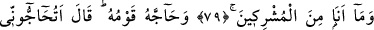
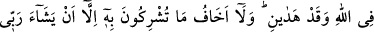
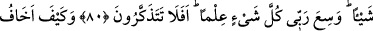
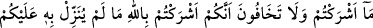
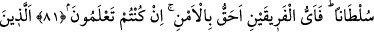
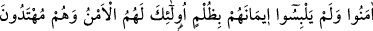
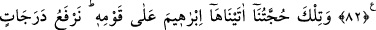
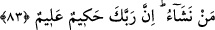
HZ. İBRAHİM (A.S.)’IN
KAVMİ İLE MÜCADELESİ
74. İbrahim, babası Âzer’e: Bir takım putları tanrılar mı ediniyorsun? Doğrusu
ben seni de kavmini de apaçık bir sapıklık içinde görüyorum, demişti.
75. Böylece biz, kesin îman edenlerden olması için İbrahim’e göklerin ve yerin
melekûtunu gösteriyorduk.
76. Gecenin karanlığı onu kaplayınca bir yıldız gördü, Rabbim budur, dedi. Yıldız
batınca, batanları sevmem, dedi.
77. Ay’ı doğarken görünce, Rabbim budur, dedi. O da batınca, Rabbim bana doğru
yolu göstermezse elbette yoldan sapan topluluklardan olurum, dedi.
78. Güneşi doğarken görünce de, Rabbim budur, zîrâ bu daha büyük dedi. O da
batınca, dedi ki: Ey kavmim! Ben sizin (Allah’a) ortak koştuğunuz şeylerden